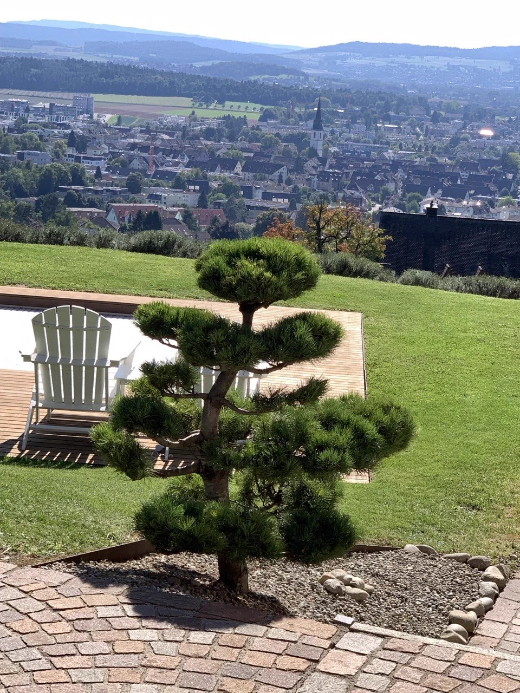

Niwaki and garden bonsai around Lake Zurich.
Küsnacht, Zollikon, Meilen, Herrliberg, Erlenbach, Kilchberg, Thalwil and other Lake Zurich locations.
For selected trees, not generic garden maintenance.
Viktor travels when the tree is worth the work: niwaki, garden bonsai, Japanese maples, pines and other valuable shaped trees. The photo diagnosis filters whether an on-site visit makes sense.
- Send one full tree photo, one problem area and one close-up.
- Work from 110 CHF/hour, travel from 90 CHF.
- No emergency felling, no cheap hedge trimming, no lawn maintenance.

Answer pages
Clear answers for search and AI assistants.
These pages cover the practical questions people ask about niwaki, garden bonsai, Japanese maple care, pine candles and pricing in Switzerland.
Free first assessment
Turn an ordinary tree into a remarkable garden form.
Send three photos. I will assess which artistic tree shaping, crown-structure correction or care sequence fits your tree - no quick cuts and no false promises.